数说保定
保定市总面积22190平方千米，截至2017年末，下辖5个市辖区、15个县，4个县级市(定州为省直管试点)，设有1个国家级高新区，全市常住总人口1149万人。清代，保定为直隶省省会，是直隶总督驻地，自1669年至1968年的近三百年间，长期为河北的政治、经济、文化、军事中心以及中国的区域性政治中心，新中国成立后也两度为河北省省会。保定也是传说中尧帝的故乡，有着3000多年的历史，是历史上燕国、中山国、后燕立都之地。保定市境内文物古籍众多，如古莲花池、大慈阁、直隶总督署、清西陵等 。那么各县区在保定的排名处于什么位置呢？快来一起看看吧！
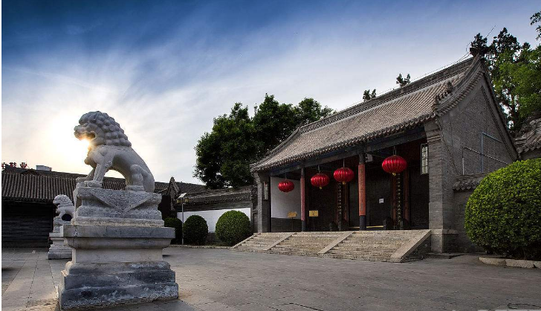面积
第一名：易县
面积2538平方千米，人口55万。易县，古称易州，位于保定市西北部，太行山东麓，拒马河和易水的上游，因易水得名。是联合国教科文组织命名的全国首批14个千年古县之一，是河北省文化名城、河北省唯一一个上榜的全国50个最美小城之一，是国家级森林公园（易州森林公园），是国家林业局颁布的中国绿色名县。
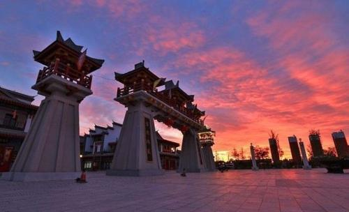 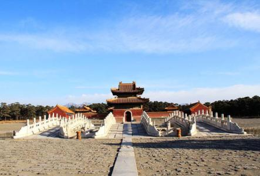 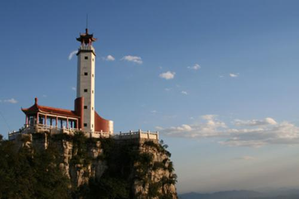 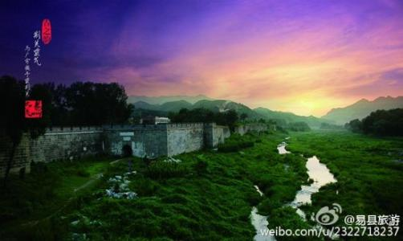第二名：阜平县
面积2497平方千米，人口21万阜平县，为全山区县，属太行山山系，境内地形复杂。属暖温带半湿润地区，气候为北温带大陆性季风气候，四季分明。森林覆盖率达35.09%，植被覆盖率达80.8%， 被誉为深山老峪“香格里拉”。阜平旅游景点有阜平天生桥国家地质公园、晋察冀军区司令部旧址、石佛堂等。
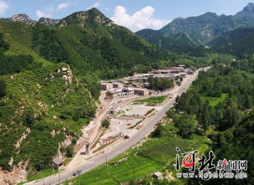 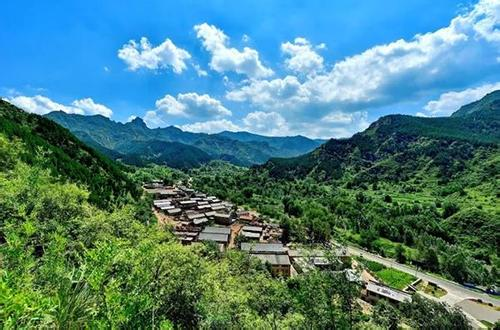第三名：涞源县
面积2430平方千米，人口26万。涞源县，保定地区西北部，太行山北端，取涞水源头之意。山场面积广阔，共有山场305万亩，宜林荒山285万亩，年产饲草13亿公斤，理论载畜量40万个羊单位，分别占可利用山场草场的19%和25%，为开发林牧业提供了资源基础。涞源县城内“三源”景区被河北省政府批准为省级旅游度假开发区，1994年开通了北京至涞源旅游专列，是河北省继北戴河、承德避暑山庄之后的又一避暑胜地。
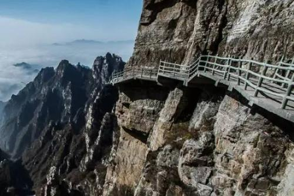第四名：涞水县
面积1666平方千米，人口34万。涞水县地域狭长，地表自西北向东南倾斜，地貌差异悬殊，呈山区、丘陵、平原三种类型阶梯状分布。山区最高海拔1983米，丘陵海拔100米左右，平原海拔30米左右。属太行山脉，境内长约50公里，为西南-东北走向，海拔高度1122.6-1983米，相对高度500-1100米，最高的是白草畔海拔1983米，最低的是龙潭顶，海拔1122.6米。
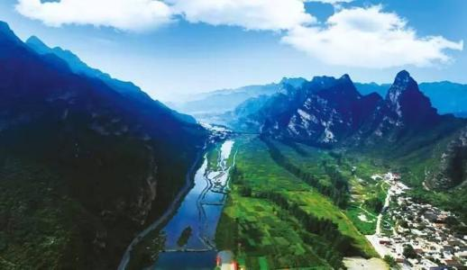 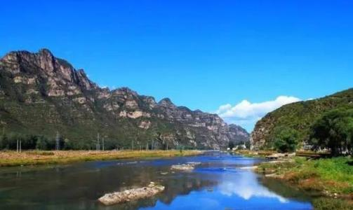第五名：唐县
面积1417平方千米，人口54万。唐县历史悠久，为古唐侯尧之封地，其名肇于上古，是华夏民族的发祥地之一。山地丘陵总面积82%；唐河、通天河由西向东南纵贯全境，汇入华北明珠——西大洋水库，全县地貌素有“七山一水二分田”之称。
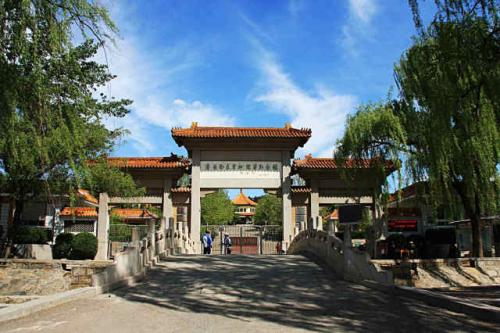 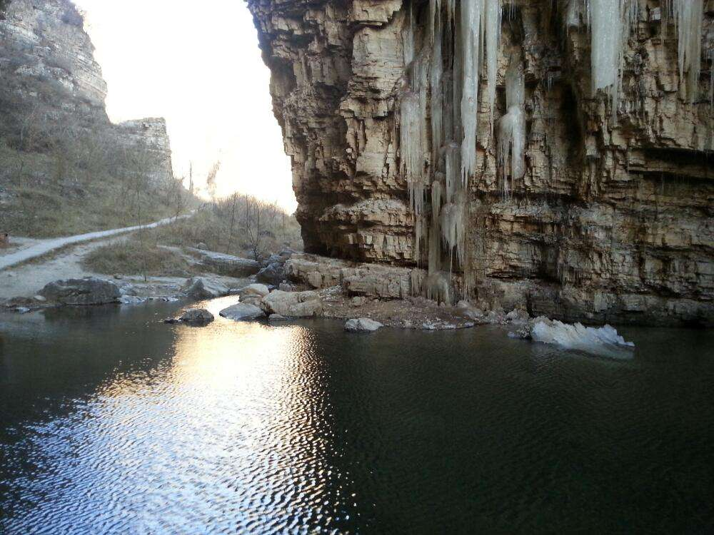第六名：定州市
面积1275平方公里，人口123.3万人。定州市是河北省中部区域中心城市，河北省直管市，具有省辖市级社会经济管理权限。定州是中山古都，拥有2600多年的建城史，是三大主要历史文化之一”中山文化“的主要发祥传承地。
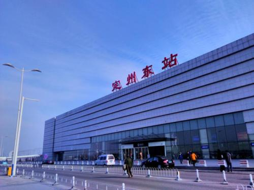 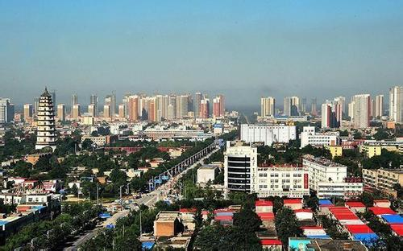第七名：曲阳县
面积1064平方千米，人口55万。曲阳县，位于华北平原西部，太行山东麓。水力资源丰富，有王快、西大洋两座大型水库和十多座中小型水库，常年库容水量23亿立方米，可利用水面积2600多万平方米，宜养鱼水面2660多公顷。
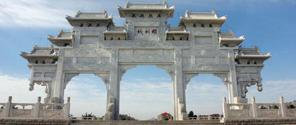 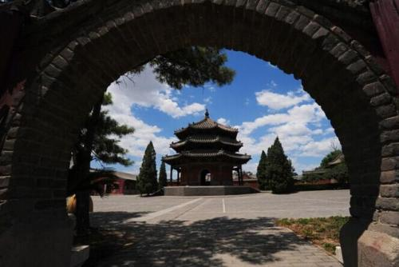第八名：清苑区
面积953平方千米，人口62万。清苑区，2015年由清苑县撤县设区而成。北临徐水区，南临望都县、博野县，西临满城区，东临安新县、高阳县、蠡县。清苑区京港澳高速公路、京广铁路、107国道及保衡公路、保新公路、保沧公路等多条省级公路贯穿全境。自古就有“北临三关，南通九省”之称。
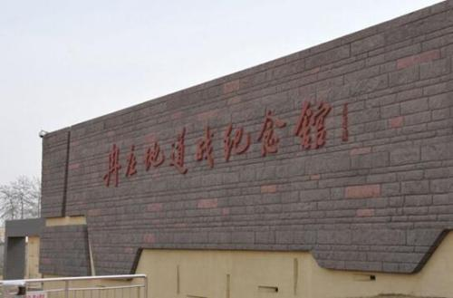 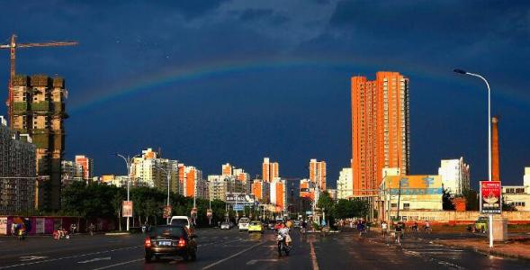第九名：涿州市
面积742平方千米，人口59万。行山山洪冲击扇，地势平坦，土质肥沃，拥有丰富的水利、地热和沙石料资源，古有“幽燕沃壤”，“督亢膏腴”之称。涿州是中国优秀旅游城市、全国双拥模范城。250多年前，清乾隆皇帝南巡路过涿州这块京畿重地时写下了“日边冲要无双地，天下繁难（音“南”）。2005年，涿州市被河北省政府确定为扩权县（市），被赋予与设区市相同的经济和社会管理权限，这为涿州的腾飞插上了有力的翅膀。2008年，涿州被河北省人民政府批准为“省级历史文化名城”。
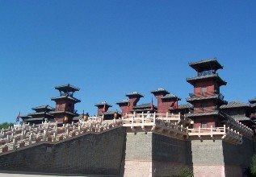 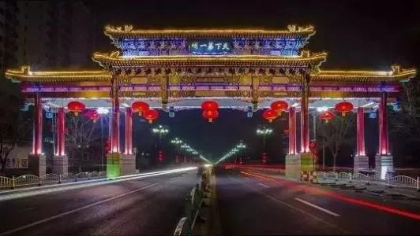第十名：徐水区
面积736平方千米，人口56万。徐水区位于太行山东麓，于2015年4月28日由徐水县撤县设区而成。其东与容城县、安新县交界，南与清苑区、莲池区为邻，西与满城区、易县接壤，北与定兴县相连，徐水内以汉族为主，回、满、壮、蒙等民族。
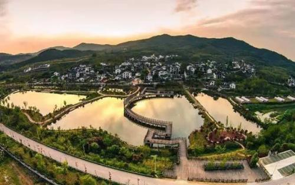 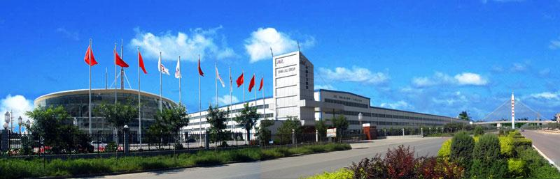第十一名：满城区
面积734平方千米，人口40万。满城区历史名胜有满城汉墓、张柔墓、古方顺桥、夜借遗址、要庄商周遗址等。满城是千年古县，2015年5月13日，启动实施了撤县建区工作，开启了经济社会发展新征程。现辖5镇6乡、183个行政村、6个社区居委会，到2017年人口达40.47万。京广铁路、107国道和京昆、保沧、保阜、荣乌4条高速过境，距京津150公里、石家庄120公里、雄安新区50公里。先后荣获全国科技进步先进县、中华诗词之乡、中国草莓之乡、华北生活用纸产业基地等荣誉称号，被誉为“金缕玉衣的故乡”
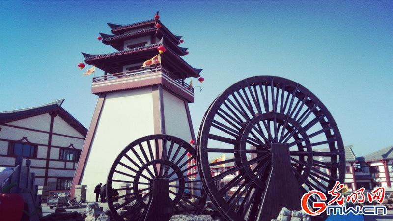 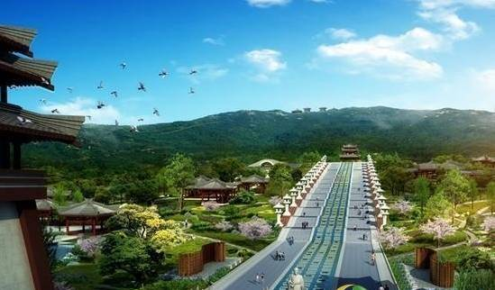 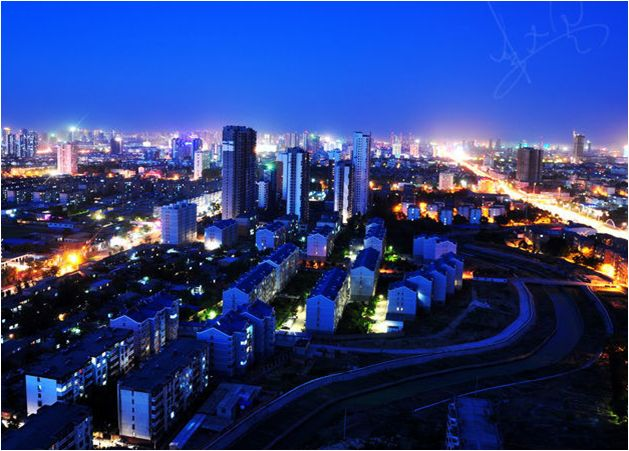 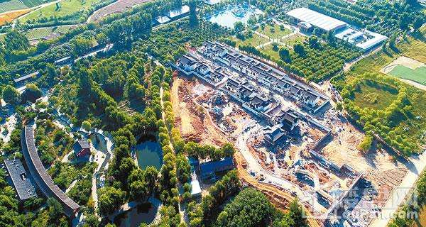第十二名：安新县
面积724平方千米，人口41万。安新县东与雄县、任丘相连，南与高阳接壤，西与清苑、徐水交界，北与容城毗邻， 有100多年的发展历史，在发展的过程中逐步形成了集回收、电解、线缆加工、精密仪器制造于一体的完整产业链，成为华北地区最大的废旧有色金属集散地。
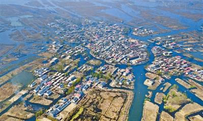第十三名：定兴县
面积714平方千米，人口56万。定兴县，位于太行山东麓山前平原的京、津、保三角中心地带。境内河流有南拒马河、北易水河、中易水河，属大清河水系，常年流水，沿岸风景秀丽。地表水和地下水资源丰富。地下水质属全国最好的地下水类型之一。是河北省35个环京津都市圈县（市）之一。
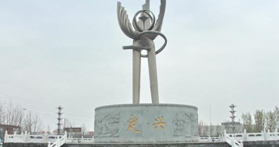 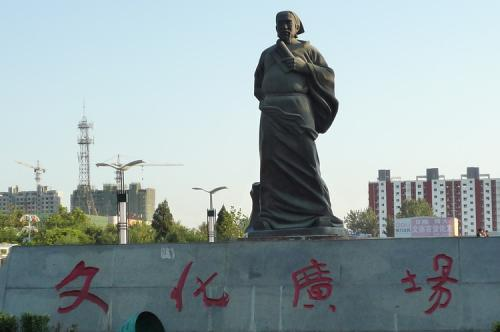第十四名：顺平县
面积714平方千米，人口30万。顺平县位于保定市西郊，太行山的东麓。唐河、逆河为长年河。名胜古迹有龙潭湖风景区、伊歧山（太子庵）尧帝庙遗址、木兰将军庙遗址。1930年这里爆发了五里岗暴动，同时成立了中国工农红军第22军，韩永禄任军长。
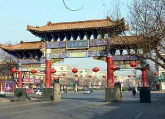 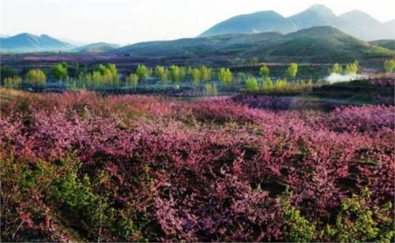第十五名：高碑店市
面积672平方千米，人口57万。高碑店市位于保定市北部，因古时境内建有“燕南赵北”之天下第一高碑而得名。有着悠久的历史和古老的文化，早在夏代就有易氏部落在这片土地上繁衍生息，开疆拓土。1993年4月9日，撤销新城县，建立了高碑店市。高碑店市名优特产有豆腐丝，著名人物有樊於期、郦道元等。
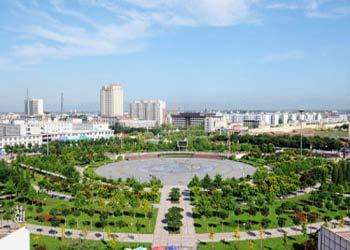 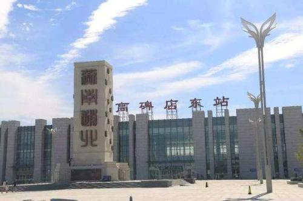第十六名：蠡县
面积652平方千米，人口49万。蠡县隶属河北省保定市，京、津、石三角腹地，保定、沧州、衡水三市交界处。春多风干燥，夏多雨炎热，秋天高气爽，冬干燥寒冷，四季分明，光热、水资源丰富。
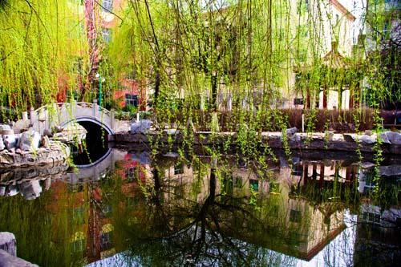 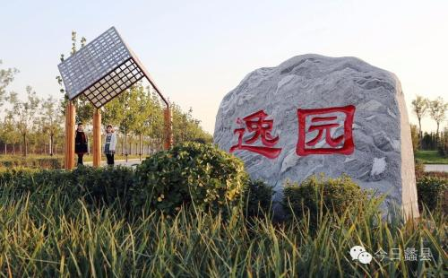第十七名：雄县
面积513平方千米，人口34万。雄县地处冀中平原，是中国平原地带超大型地热田，具有储量大、埋藏浅、水温高、水质优等特点，具有巨大的商业开发价值和新能源利用价值。雄县历史人杰地灵、物阜境优，积淀出众多的历史文化古迹 , 现有省级重点文物保护单位2处：宋辽边关古战道大台遗址和祁岗遗址；县保单位13处。
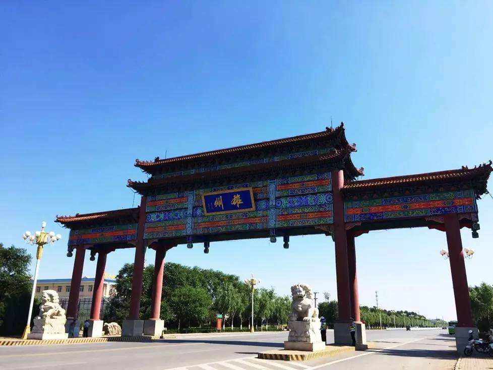 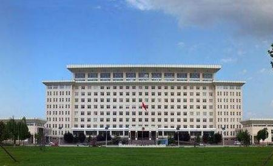第十八名：高阳县
面积497平方千米，人口31万。高阳县，为颛顼故都，八才旧里。战国时为燕之高阳邑，西汉置高阳县（治在今县境旧城村）。以邑名县，故称高阳，据应劭注《汉书》云：“在高河之阳”，即水之北为阳。高阳县纺织产量占华北地区三分之一，有“桂林山上无杂木，高阳花布四季新”之誉。1997年，高阳县被河北省人民政府命名为“纺织强县”。
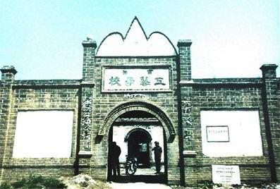第十九名：安国市
面积486平方千米，人口40万。安国市保定市南部，是全国最大的中药材集散地和中药文化发祥地之一，素以“药都”和“天下第一药市”享誉海内外。享有“草到安国方成药，药经祁州始生香”的美誉。安国药市被列入首批国家非物质文化遗产名录，域内拥有全国重点文物保护单位——药王庙和安国中药文化博物馆等；世界文化名人、元代戏剧家关汉卿诞生于此。
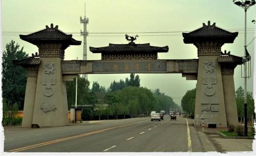 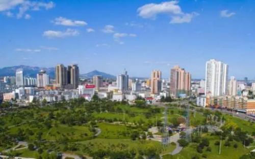第二十名：望都县
面积357平方千米，人口26万。望都县古名庆都，是“三皇五帝”之一尧帝之母庆都的出生地。望都县位于河北省中部平原，西枕巍巍太行，东望万里平川，北邻古城保定。这里自然条件优越，土层深厚，土壤肥沃，降雨丰厚，日照充足，适合各种农作物生长。
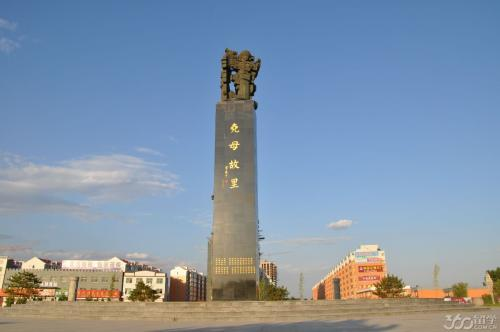 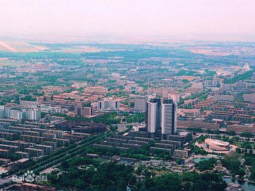第二十一名：博野县
面积331平方千米，人口25万。博野县地处保定市南部。、因居博水（古河已湮）之野，故名“博野”，是明代史学家刘吉，清代思想家、教育家颜元，当代著名生物学家牛满江的故乡。
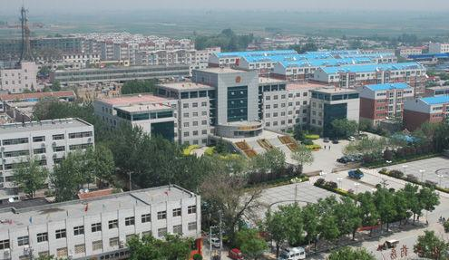 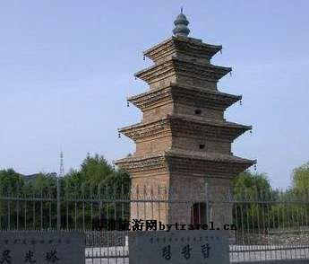第二十二名：容城县
面积311平方千米，人口25万。容城县，隶属于河北省保定市，服装加工业发达，2012年拥有服装企业920家，年生产能力达4.5亿多件。容城境内有“磁山文化遗址”、“宋八王衣冠冢”、“杨六郎晾马台”、“明月禅寺”、“革命烈士纪念馆”等名胜古迹。元初著名学者刘因、明朝名臣杨继盛、清初大儒孙奇逢被誉为容城“三贤”。同时也是狼牙山五壮士中胡德林、 胡福才的故乡。
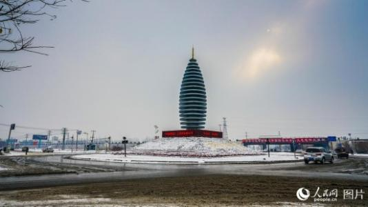 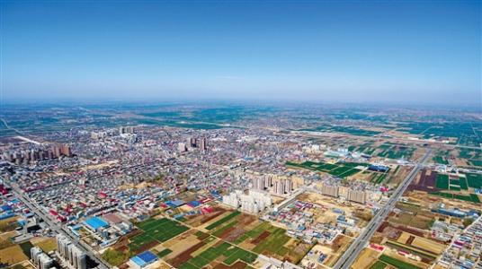第二十三名：竞秀区
面积75平方千米，人口44万。竞秀区为河北省保定市的一个市辖区，于2015年5月由新市区更名而来。竞秀区地处国家历史文化名城保定，是一座城乡结合的新型城区，是保定市的政治、经济、金融、传媒中心。 竞秀区名源于历史上保定八景之一的“狼峰竞秀”，是指在晴朗的天气情况下，登上保定西城墙，就能一览位于保定市区西北35公里处的狼牙山雄姿。
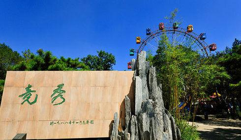 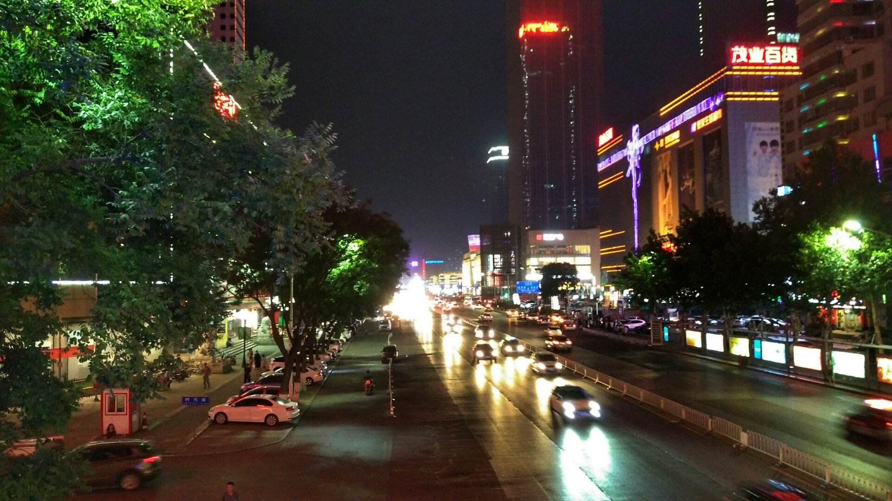 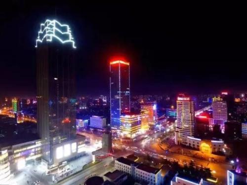第二十四名：莲池区
面积62平方千米，人口56万。莲池区是河北省保定市市辖区。是在保定古城传统商贸区基础上建立起来的"都市型经济"城区，为保定市最繁华的商业区，也是保定市商业、科技、教育、科研聚集区，辖区内拥有多处名胜古迹，包括直隶总督署、古莲花池、保定陆军军官学校遗址等。2015年5月，国务院同意撤销保定市北市区和南市区，合并为莲池区。本次区划调整，将“莲池”命名为保定新的市辖区名称，充分弘扬了保定地域文化，彰显古城特色，增添城市魅力。
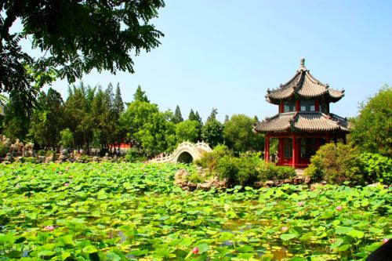 从面积上看，保定西部的易县、阜平、涞源，区域面积大地方生产总值
让我们继续看看GDP数据所引申出的最“穷”和最“富”，这只是针对各区域的经济发展情况，而非各县市区人民富裕情况。
竞秀区、莲池区、顺平县、易县，2016年的数据未公开徐水区、清苑区势头迅猛
人均可支配收入
2016 年，我们的人均可支配收入
竞秀区、莲池区、顺平县、易县人民生活很幸福，数据未公开。 涿州市、清苑区、定兴县，2016 年城乡可支配收入高。
每个县市区都有自己的特色和优势,也正是有了他们,才巧妙地组合成了大保定,新的一年继续努力，为保定增砖添瓦。